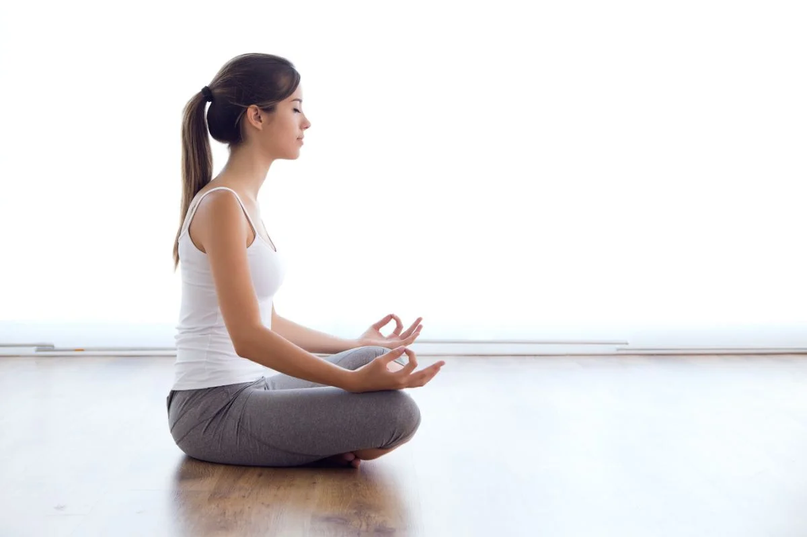
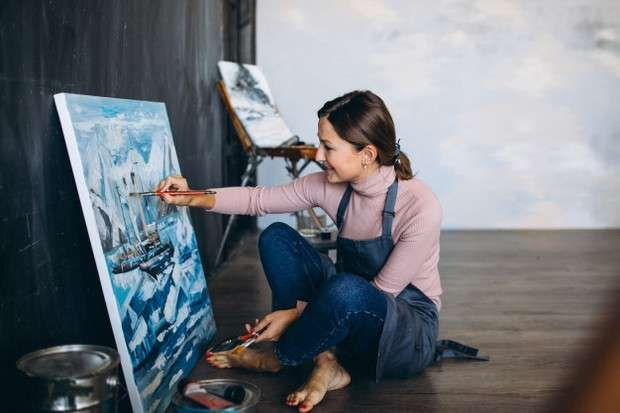

✨ Layanan di Ruang Pulih – Klinik Self-Healing
🧘 1. Sesi Self-Healing 1-on-1 – “Curhat tanpa takut dihakimi.”
- Konseling ringan (bukan psikolog)
- Journaling guided
- Affirmation building
💸 Rp75.000 / sesi (45 menit)

🕯 2. Ritual Tenang Diri – “Karena semua orang butuh diam sebentar.”
- Aromatherapy room (30 menit)
- Guided breathing session
- Musik meditasi + teh herbal
💸 Rp50.000 / sesi
📖 3. Workshop "Luka Dalam, Pulih Pelan-Pelan"
- Kelas journaling
- Visualisasi healing
- Meja menulis dengan lilin & musik lembut
💸 Rp100.000 / 90 menit
🌸 4. Body & Soul Therapy – “Biar pikiran lega, badan pun enak.”
- Pijat relaksasi ringan
- Scrub atau totok wajah
- Affirmation card sesi akhir
💸 Rp130.000 / 60 menit

✉️ 5. Kirim Surat ke Diri Sendiri – “Maaf, terima kasih, aku sayang kamu.”
- Tulis surat (dengan panduan)
- Dikirim balik ke kamu 1 bulan lagi
💸 Rp30.000
🎨 6. Art Healing Corner – “Lukis tanpa dinilai, hanya untuk lega.”
- Cat air, kertas, lilin aroma
- Bebas ekspresi: gambar, tulis, coret
💸 Rp55.000
💬 Tambahan Fasilitas:
- Ruang tenang: bean bag, cahaya hangat
- Playlist khusus healing
- Tea bar herbal: lavender, rosella, jahe
- Voucher “peluk gratis” (simbolis tapi meaningful)